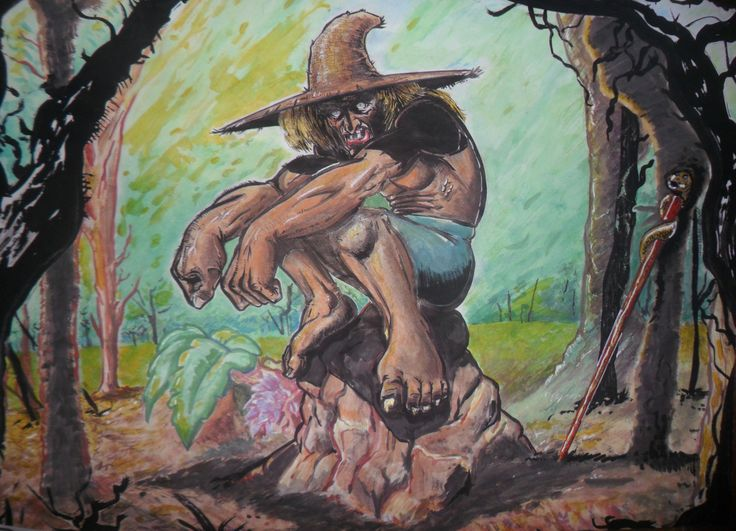

El Pombero
El Pombero es una de las figuras más antiguas y persistentes del folclore guaraní, una presencia que pertenece al monte, a la espesura húmeda y al silencio que cae cuando el sol desaparece. No es un simple espíritu: es guardián, vigilante y juez de quienes pisan su territorio sin respeto.
Se le describe como un ser bajo y robusto, de piel oscura y cubierta de abundante vello. Sus pies, según la tradición, pueden estar volteados hacia atrás para confundir a quienes intentan seguir sus huellas. Viste ropas sencillas, sombrero de paja y a veces carga una bolsa o un pequeño saco donde guarda tabaco o aquello que recibe como ofrenda. Sus ojos brillan en la penumbra, atentos a cada movimiento en el monte.
Habita entre árboles, cuevas y senderos olvidados. Prefiere la noche, cuando el mundo humano duerme y el bosque vuelve a su verdadero dueño. Es capaz de silbar de una manera tan particular que quienes lo escuchan sienten que está lejos… pero al mismo tiempo justo detrás de ellos.
Comportamiento
El Pombero no suele atacar de frente. No es una criatura de confrontación abierta, sino de advertencia y corrección. Su presencia se manifiesta a través de pequeñas alteraciones: objetos que cambian de lugar, animales inquietos sin razón aparente, sombras que parecen moverse entre los árboles cuando no hay viento.
Se dice que protege a los animales del monte y castiga a quienes maltratan la naturaleza. Los cazadores que toman más de lo necesario, quienes destruyen sin motivo o se burlan de las creencias antiguas pueden convertirse en blanco de su atención.
También es conocido por su cercanía con los niños. Algunas versiones lo describen como protector, otras como travieso y peligroso si no se le respeta. En todos los casos, el mensaje es claro: el equilibrio debe mantenerse.
Ritual de ofrenda
Entre las tradiciones más difundidas está el ritual para ganarse su favor.
La ofrenda clásica consiste en dejar tabaco, caña o comida sencilla en un lugar apartado del patio o cerca del monte. Sin embargo, el elemento más importante no es el objeto en sí, sino la constancia.
La leyenda dice que, si alguien decide iniciar el pacto, debe ofrecer exactamente lo mismo durante treinta días consecutivos. No puede cambiar la ofrenda, no puede omitir un día, y no puede burlarse del acto. La repetición es una muestra de respeto y compromiso.
Si el ritual se cumple sin fallar, el Pombero puede volverse protector del hogar: aleja males, cuida animales y evita desgracias. Pero si se rompe la promesa —si se olvida un día, si se cambia la ofrenda o si se hace con intención egoísta— la historia cambia.

La ira del Pombero
La ira del Pombero no es inmediata ni explosiva; es silenciosa y persistente.
Se manifiesta en molestias constantes: ruidos en la madrugada, golpes en las paredes, susurros en la oscuridad. Algunos relatos hablan de moretones inexplicables al despertar o de una sensación de peso en el pecho durante la noche. Otros cuentan que puede extraviar animales, enfermar cultivos o provocar una racha de mala fortuna que parece no tener causa.
Lo más inquietante es que rara vez se le ve. El castigo proviene de algo que no se deja atrapar ni confrontar. La única manera de apaciguarlo, según la tradición, es retomar la ofrenda con humildad y sin desafío.
El Pombero no representa únicamente temor. En muchas comunidades simboliza el respeto por la naturaleza y la memoria de una relación más equilibrada con el entorno. Es la personificación del monte mismo: impredecible, generoso si se le honra, implacable si se le agrede.
No es un demonio en el sentido clásico, ni un dios en el sentido absoluto. Es una presencia liminal, situada entre el mundo visible y el invisible, recordando que no todo territorio pertenece al hombre.
Si alguna vez escuchas un silbido que no logras ubicar, si el bosque guarda un silencio demasiado perfecto, quizá no sea coincidencia.
Tal vez el guardián del monte está cerca. Observando. Esperando que recuerdes las reglas antiguas.